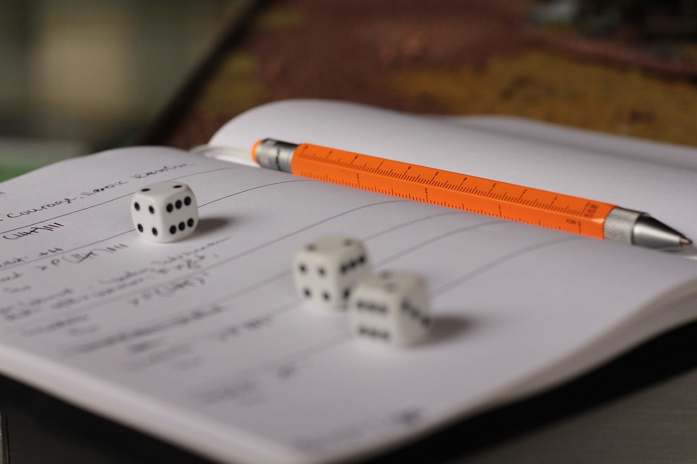
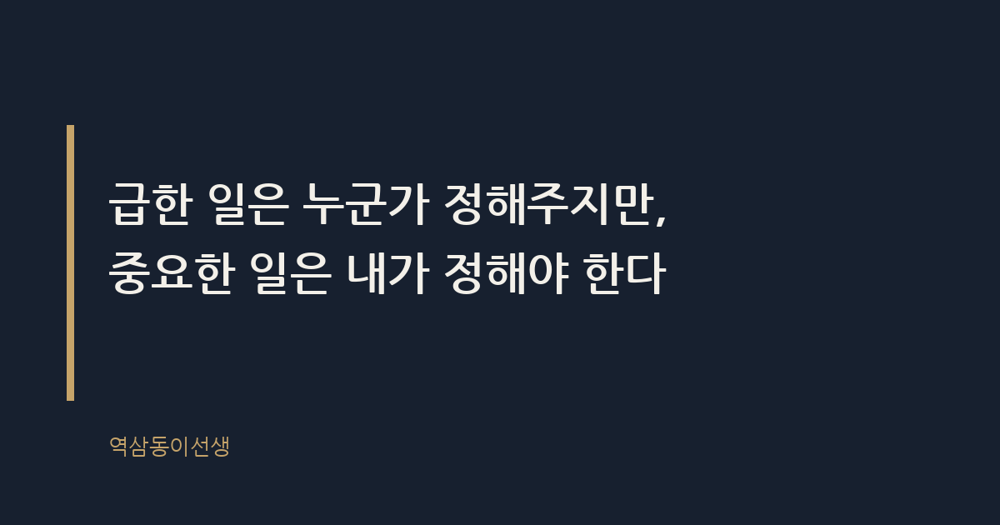
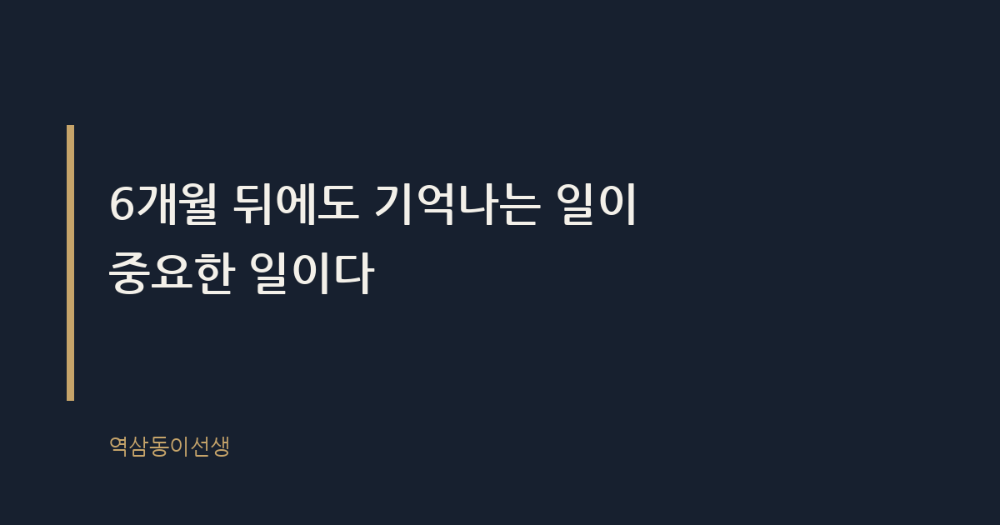

주제 업무 우선순위, 급한 일과 중요한 일 구분법 (evergreen / office)
제목 후보
메타 설명 급한 일만 쳐내다 하루가 끝나는 직장인에게. 급한 일과 중요한 일을 구분하는 기준표와 실전 관찰을 담았다.
라벨 업무우선순위, 시간관리, 직장인팁, 워라밸, 번아웃예방, 생산성, 급한일중요한일구분법, 아이젠하워매트릭스, 업무효율화, 직장생활꿀팁
실용 자산 계산·기준 표 — 급한 일과 중요한 일을 가르는 기준을 찾는 '방법·기준' 검색 의도라 2x2 분류 기준표를 본문에 바로 넣었다
발행 전 팩트체크
이미지 (Blogger 편집기에 드래그해 넣으세요)



월요일 아침 9시, 노트북을 열자마자 메일함에 안 읽은 메일이 스물일곱 개 떠 있었다. 제목에 '긴급', '오늘까지'가 붙은 게 여섯 개. 나는 커피도 내려놓고 하나씩 쳐내기 시작했다. 회신하고, 승인하고, 전화 받고. 오후 6시, 메일함은 깨끗해졌다. 그런데 책상 한쪽에 사흘째 놓여 있던 분기 전략안은 여전히 첫 장 그대로였다.
그날 느낀 건 허탈함이었다. 하루 종일 바빴는데, 정작 중요한 일에는 손도 못 댔다는 감각. 이 감각, 직장인이라면 한 번쯤은 겪어봤을 것이다. 업무 우선순위를 정한다는 건 결국 이 둘을 가르는 일이다. 급한 일과 중요한 일, 누가 더 큰 소리로 재촉하는가가 아니라 어느 쪽이 시간이 지나도 영향력이 남는가로 가른다는 게 이 글의 결론이다.
급한 일이란 마감이 임박해 즉각적인 반응을 요구하는 일이다. 메일 회신, 당일 보고, 갑작스러운 회의 소집이 대표적이다. 반대로 중요한 일이란 당장 결과가 보이지 않아도 장기적으로 조직이나 개인의 방향을 바꾸는 일이다. 전략 기획, 역량 개발, 핵심 관계 관리가 여기 속한다.
업무 우선순위란 결국 유한한 시간과 에너지를 어디에 먼저 쓸지 정하는 판단 기준이다. 문제는 급한 일과 중요한 일이 겹치지 않는 경우가 훨씬 많다는 데 있다. 급한 일은 대개 남이 던진 일이고, 중요한 일은 대개 내가 세운 일이다. 그래서 급한 일 중요한 일 구분법을 묻는 사람들 대부분은 사실 "왜 나는 늘 남의 일만 쳐내고 있는가"를 묻는 것이다.
신입 시절 내 사수가 해준 말이 있다. "네 다이어리에 적힌 일 중에 네가 먼저 적어 넣은 건 몇 개냐." 그때는 무슨 뜻인지 몰랐다. 몇 년 지나 다이어리를 펼쳐보니, 적힌 일정의 팔 할이 남이 잡은 회의와 남이 요청한 마감이었다. 내가 먼저 적어 넣은 일은 분기에 한두 개뿐이었다. 그게 바로 중요한 일이 밀리는 증거였다.
이 구분법의 원형은 꽤 오래됐다. 2차대전을 지휘하고 이후 미국 대통령을 지낸 드와이트 아이젠하워가 남긴 말로 알려져 있다. "급한 일은 대개 중요하지 않고, 중요한 일은 대개 급하지 않다." 이 발상을 스티븐 코비가 '성공하는 사람들의 7가지 습관'에서 4분면으로 정리하면서 널리 퍼졌다.
이 틀이 반세기 넘게 회사원들 책상 위에서 살아남은 이유는 단순하다. 인간은 구조적으로 눈앞의 자극에 먼저 반응하도록 설계돼 있기 때문이다. 전화벨이 울리면 손이 먼저 간다. 분기 전략안은 울리지 않는다. 급한 일과 중요한 일을 가르는 기준이 수십 년째 바뀌지 않는 건, 사람이 바뀌지 않았기 때문이다.
급한 일이라고 다 같은 급한 일이 아니다. 진짜 긴급이란 지금 처리하지 않으면 돌이킬 수 없는 손실이 생기는 일이다. 가짜 긴급이란 보낸 사람의 불안이 만들어낸 압박일 뿐, 실제로는 하루 이틀 늦어도 아무 일도 일어나지 않는 요청이다. 둘을 구분하는 질문은 하나다. "이걸 내일 오전에 처리하면 실제로 무슨 손해가 생기는가."
메일 제목에 '긴급'이 붙어 있다고 다 긴급한 건 아니다. 지켜본 바로는, '긴급'이라는 단어를 가장 자주 쓰는 사람일수록 실제 마감은 여유가 있는 경우가 많았다. 반대로 정말 급한 일은 제목이 아니라 전화로 온다. 이 간단한 패턴만 알아도 메일함 앞에서의 불안이 절반은 줄어든다.
급한 일을 계속 쳐내다 보면 몸은 분명히 신호를 보낸다. 퇴근길에 오늘 뭘 했는지 떠오르지 않는 날이 늘어난다. 분명 하루 종일 바빴는데 머릿속엔 남는 게 없는 상태, 그게 쌓이면 번아웃으로 이어진다. 중요한 일을 처리했을 때는 피곤해도 뿌듯함이 남는다. 급한 일만 처리했을 때는 피곤함만 남고 뿌듯함은 없다. 이 차이를 몸으로 느끼기 시작하면, 그때부터 우선순위를 다시 들여다볼 때가 된 것이다.
마케팅 조직을 오래 지켜보면서 확인한 구조적 원인이 하나 있다. 급한 일이 항상 이기는 이유는 보낸 사람이 있고 마감이 눈에 보이기 때문이다. 급한 일 뒤에는 늘 누군가 있다. 상사, 고객, 유관부서. 그 사람에게 즉각 답을 주면 즉각 인정받는다. 반면 중요한 일이 뒤로 밀리는 이유는 당장 아무도 재촉하지 않기 때문이다. 전략 기획서를 하루 늦게 써도 오늘 당장 전화가 오지는 않는다.
후배 사원 하나가 기억난다. 입사 2년 차, 상사의 재촉에 늘 가장 먼저 반응하는 친구였다. 메일은 받자마자 답했고, 보고서는 요청 당일 밤을 새워서라도 냈다. 그런데 정작 본인이 맡은 사이드 프로젝트, 반년짜리 신규 채널 기획은 계속 미뤄졌다. 연말 평가에서 그 친구가 받은 피드백은 "성실한데 임팩트가 안 보인다"였다. 급한 일을 잘 쳐낸 사람과 중요한 일을 지킨 사람, 평가 시즌에 갈리는 건 결국 후자다.
조직의 보상 구조도 한몫한다. 급한 일 처리는 즉시 눈에 띄고 즉시 칭찬받는다. 중요한 일은 성과가 나기까지 몇 달, 길게는 1년이 걸린다. 그 사이 조직은 '지금 당장 반응 잘하는 사람'을 더 자주 칭찬하게 된다. 업무 우선순위를 개인 의지로만 지키기 어려운 이유가 여기 있다.
임원 회의에 들어가 보면 이 구조가 더 선명하게 보인다. 안건 열 개 중 아홉은 지난주에 생긴 문제, 즉 급한 일이다. 반기 전에 세워둔 중장기 과제는 "다음에 다시 보고하겠습니다"로 미뤄지는 날이 더 많았다. 회의실 안에서조차 급한 일이 중요한 일을 밀어내는 구조라면, 개인의 책상 위에서는 말할 것도 없다.
말로만 구분하면 결국 다시 메일함 앞에서 무너진다. 눈앞의 일을 받았을 때 바로 대입해볼 수 있는 기준표를 적어둔다.
| 구분 | 대표 사례 | 행동 원칙 |
|---|---|---|
| 급하고 중요함 | 고객 클레임, 당일 마감 보고, 시스템 장애 | 지금 바로 처리한다 |
| 급하지만 중요하지 않음 | 참조 메일, 즉흥 회의 소집, 단순 확인 요청 | 짧게 끊거나 위임한다 |
| 급하지 않지만 중요함 | 전략 기획, 역량 개발, 핵심 관계 관리 | 캘린더에 시간을 미리 박아 넣는다 |
| 급하지도 중요하지도 않음 | 습관적 참조 메일, 불필요한 중간 보고 | 줄이거나 아예 없앤다 |
이 표에서 가장 중요한 칸은 세 번째, '급하지 않지만 중요함'이다. 여기 들어가는 일은 마감이 없기 때문에 스스로 마감을 만들어야 한다. 캘린더에 2시간을 비워두지 않으면, 그 자리는 반드시 누군가의 급한 메일이 채운다.
오랜 시간 회의실에서 지켜본 바로는, 결국 성과를 내는 사람들은 하루 중 급한 일을 처리하는 시간과 중요한 일을 처리하는 시간을 물리적으로 분리해 둔다. 오전 9시부터 10시 반까지는 메일도 슬랙도 보지 않고 중요한 일만 붙잡는 식이다. 급한 일은 사라지지 않는다. 다만 중요한 일을 먼저 떼어놓는 사람과, 급한 일부터 쳐내다가 중요한 일을 영영 미루는 사람으로 갈릴 뿐이다.
또 하나 공통점은 '거절하는 연습'이다. 급한 일 중 상당수는 사실 그렇게까지 급하지 않다. "내일 오전까지 드려도 될까요?"라는 한마디로 많은 급한 일이 하루 뒤로 밀린다. 그 하루가 중요한 일을 지킬 수 있는 유일한 틈이다.
생각만으로는 습관이 바뀌지 않는다. 실제로 책상 위에서 효과를 본 순서를 적어둔다.
이 세 단계를 반년쯤 반복한 후배가 있었다. 처음엔 "그렇게 해도 되나요"라며 불안해했는데, 분기 말이 되니 그 친구 캘린더에만 중요한 프로젝트 이름이 꾸준히 찍혀 있었다. 나머지는 여전히 참조 메일과 즉흥 회의로 하루를 채우고 있었다.
한 번 정한 우선순위는 오래가지 않는다. 월요일에 세운 중요한 일 세 가지가 수요일에도 똑같이 중요하다는 보장은 없다. 거래처 상황이 바뀌거나 상사의 관심사가 바뀌면 중요한 일의 순서도 함께 바뀐다. 그래서 우선순위 정리는 한 번의 선언이 아니라 매일 아침 5분씩 다시 들여다보는 점검에 가깝다. 어제 중요했던 일이 오늘도 중요한지, 그 질문을 스스로에게 던지는 사람만이 진짜 우선순위를 유지한다.
급한 일을 쳐내다 보면 하루가 꽉 찬 것처럼 느껴진다. 메일함은 비었고, 할 일 목록에는 체크 표시가 가득하다. 그런데 그 하루가 끝난 뒤 남는 게 없다면, 그건 바쁜 하루였지 쓸모 있는 하루는 아니었다는 뜻이다. 씁쓸하지만, 나도 임원이 되고 나서야 이 차이를 제대로 알아챘다. 6개월 뒤에도 기억나는 일이 중요한 일이다. 급한 일은 누군가 정해주지만, 중요한 일은 내가 정해야 한다.
Q. 오늘 하루, 급한 일만 쳐내다 중요한 일을 또 미룬 적 있으신가요?